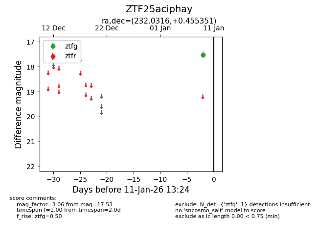
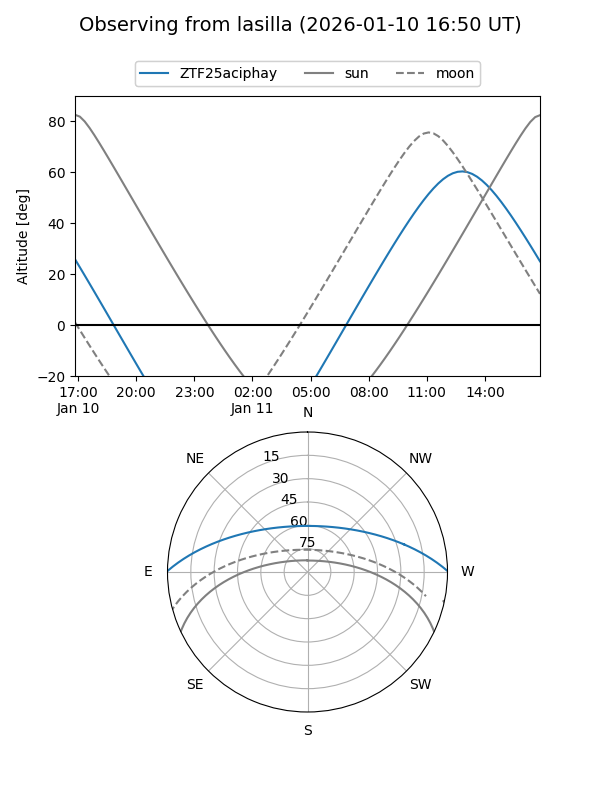
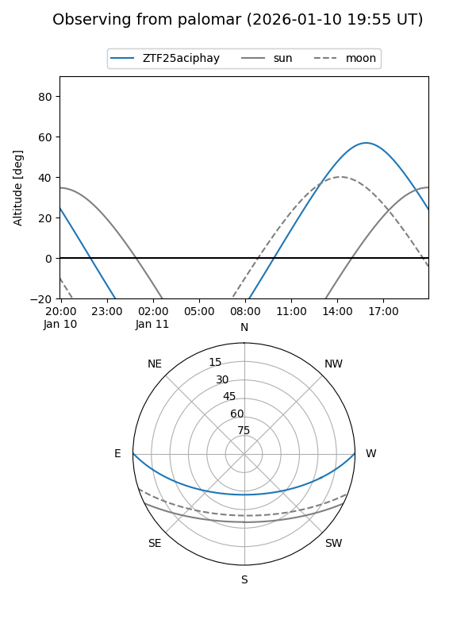

ZTF25aciphay
Target ZTF25aciphay at 2026-01-11 13:24
Aliases and brokers:
FINK: link
Lasair: link
ALeRCE: link
alt names
ZTF25aciphay (ztf,fink_ztf)
Coordinates:
equatorial (ra, dec) = 232.0316,+0.45535
equatorial (HMS+DMS) = 15:28:07.59,+00:27:19.26
galactic (l, b) = (4.1894,+43.91312)
Flags:
Photometry:
last ztfg=17.53
1 ztfg detections
Lightcurve

Visibility


Additional plots